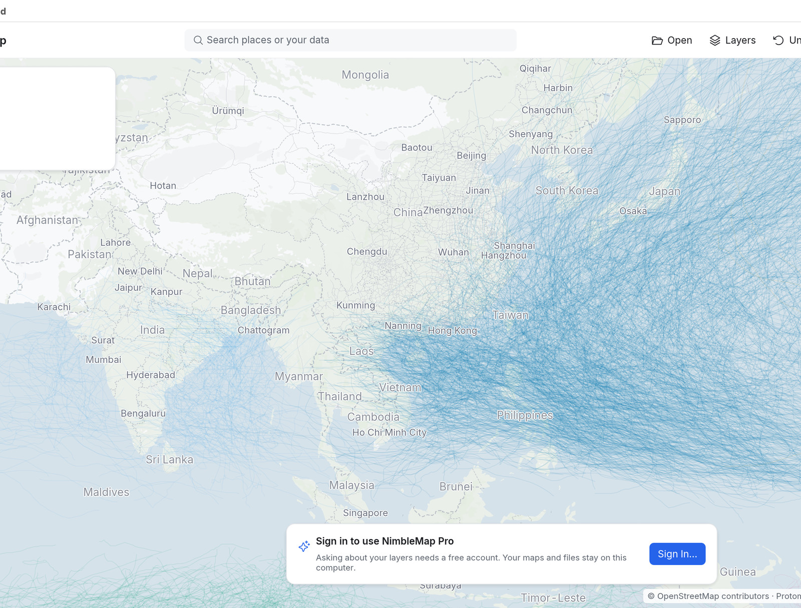
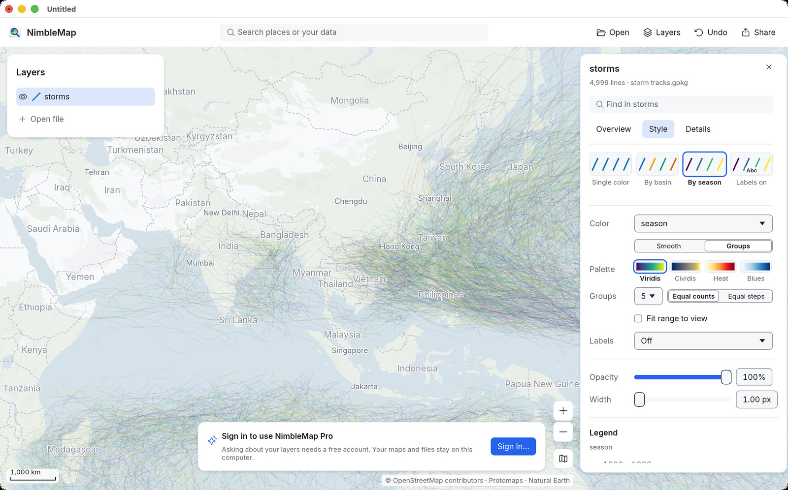
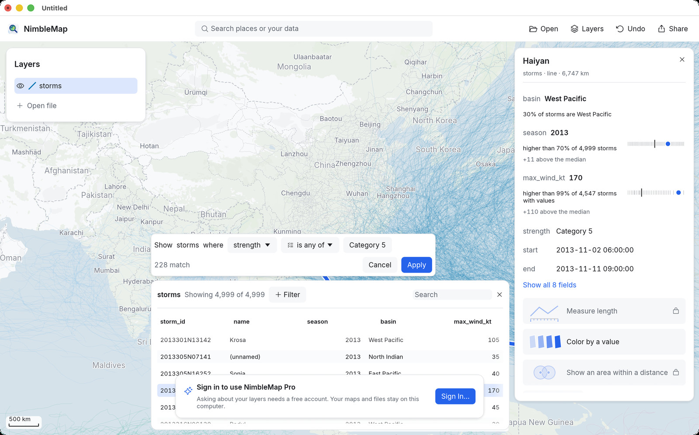
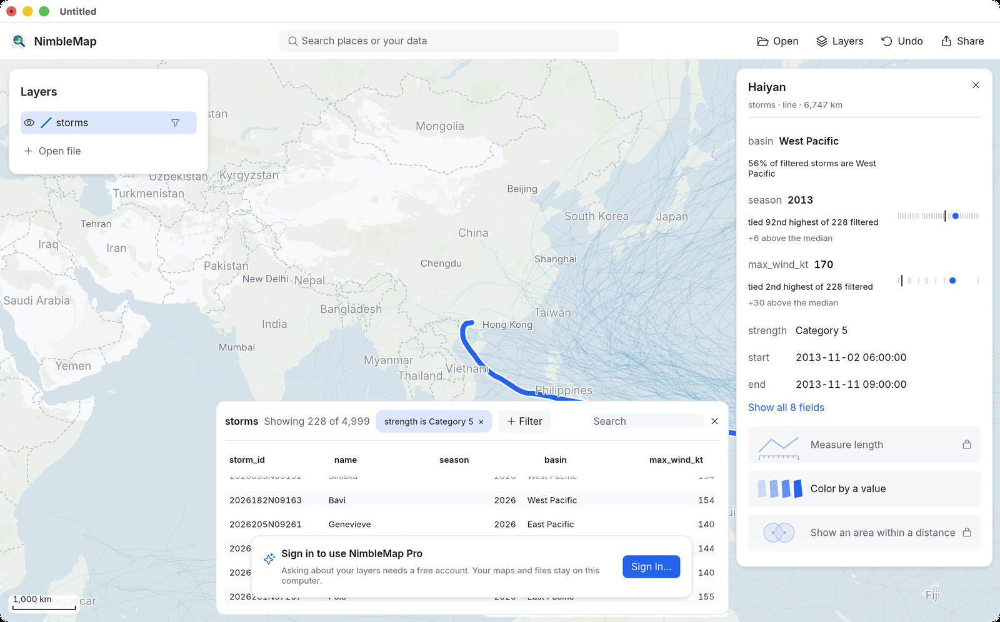
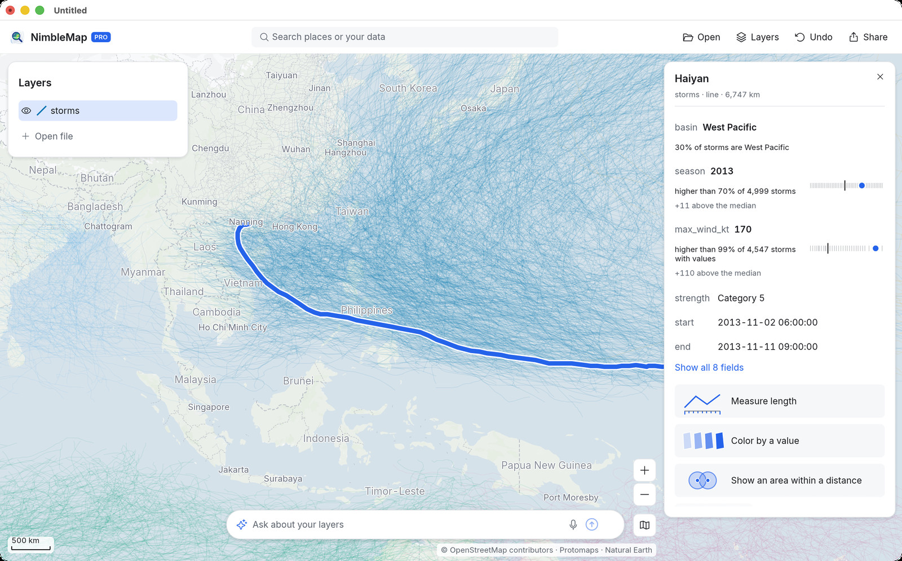

Anleitung 1 · Kostenlos
Taifune: die stärksten Stürme
Welche Stürme waren seit 1980 die heftigsten, und wohin zogen sie? Sie öffnen alle seit 1980 aufgezeichneten Zugbahnen tropischer Wirbelstürme, färben sie nach Ozean ein, schlagen Taifun Haiyan nach und behalten nur die Stürme der Kategorie 5.
-
Das Beispiel öffnen
Klicken Sie auf der Infokarte unten in einem neuen Fenster auf Examples (Beispiele) und wählen Sie Typhoons and hurricanes (Taifune und Hurrikane). (Auch später jederzeit: File › Open Example › Typhoons and hurricanes, also Ablage › Beispiel öffnen.)
Im Bereich Layers (Layer) erscheint ein Layer namens storms, und seine Infokarte rechts zeigt 4,999 lines · storm tracks.gpkg (4.999 Linien): eine Linie pro Sturm.
-
Die Bahnen nach Ozean einfärben
Öffnen Sie auf der Infokarte des Layers den Tab Style (Stil) und klicken Sie auf die Kachel By basin (Nach Ozeanbecken). Die Legend (Legende) listet jetzt die Becken auf: West Pacific, East Pacific, North Atlantic und so weiter.

Der Westpazifik (dunkelblau) ist das aktivste Becken der Erde. Die Taifune, die Hongkong, Shanghai, Taiwan und Japan erreichen, entstehen alle hier. -
Einen Sturm anklicken und sehen, wo er steht
Klicken Sie auf eine beliebige Bahn. Wo sich mehrere Bahnen überlagern, können Sie in einer kleinen Liste wie 4 objects here (4 Objekte hier) eine auswählen; wählen Sie Haiyan · storms.

Die Infokarte beschreibt jetzt Taifun Haiyan (2013), und noch bevor sie ein Werkzeug anbietet, sagt sie Ihnen, wie Haiyan im Vergleich dasteht: Sein max_wind_kt von 170 Knoten ist higher than 99% of 4,547 storms with values (höher als 99 % von 4.547 Stürmen mit Wert). Der kleine Streifen neben jeder Zeile zeigt, wo er unter allen anderen liegt.

Haiyan zog im November 2013 über die zentralen Philippinen – als einer der stärksten Stürme, die je auf Land trafen. Sie suchen einen Sturm nach Namen? Tippen Sie ihn oben auf der Infokarte des Layers in Find in storms (In storms suchen) ein, oder ins Suchfeld der Symbolleiste, das Treffer unter Your data (Ihre Daten) auflistet.
-
Nach einem Wert einfärben
Klicken Sie auf der Infokarte auf Color by a value (Nach Wert einfärben). Der Tab Style öffnet sich, und die Bahnen sind nach einer Zahl aus den Daten eingefärbt. Um stattdessen nach Windstärke einzufärben, öffnen Sie das Menü Color (Farbe) und wählen Sie max_wind_kt; probieren Sie die Farbpalette Heat (Hitze). Groups (Gruppen) teilt die Werte in wenige Klassen; Smooth (Stufenlos) nutzt einen fließenden Farbverlauf.

Hier folgt die Farbe dem Feld season (dem Jahr). Über das Menü Color wechseln Sie zu jedem anderen Feld. -
Die Tabelle öffnen
Klicken Sie unten auf der Infokarte auf View in table (In Tabelle anzeigen). Die Tabelle schiebt sich vom unteren Kartenrand herauf: eine Zeile pro Sturm, eine Spalte pro Attribut. Wählen Sie eine Zeile aus, wird auch der Sturm auf der Karte ausgewählt.
-
Nur die Stürme der Kategorie 5 behalten
Klicken Sie in der Tabelle auf + Filter. Ein Satz erscheint, den Sie vervollständigen. Stellen Sie ihn auf Show storms where strength is any of Category 5 (storms anzeigen, bei denen strength einer der Werte Category 5 ist). Noch bevor Sie bestätigen, sagt er, wie viele passen: 228 match (228 Treffer). Klicken Sie auf Apply (Anwenden).

Die übrigen 4.771 Bahnen sind ausgeblendet, nicht gelöscht. Die Tabelle zeigt Showing 228 of 4,999 (228 von 4.999 angezeigt), der Filter erscheint als Chip, den Sie mit × entfernen können, und die Layer-Zeile zeigt einen Trichter. Die Infokarte vergleicht Haiyan jetzt nur noch mit den gefilterten Stürmen: tied 2nd highest of 228 filtered (gleichauf zweithöchster von 228 gefilterten).

Stürme der Kategorie 5 ballen sich östlich der Philippinen und biegen nach Taiwan, Südchina und Japan ab. Zum Vergleich können Sie eine zweite Bedingung hinzufügen (zum Beispiel basin ist einer der Werte West Pacific) oder den Chip entfernen und North Atlantic ausprobieren. Jede Änderung lässt sich mit einem Schritt Undo (Widerrufen) rückgängig machen.
-
Welche Städte werden am häufigsten getroffen?
Zoomen Sie bei aktivem Filter an die Küste, die Sie interessiert (tippen Sie eine Stadt wie Hongkong oder Manila ins Suchfeld), und Sie sehen, welche Orte unter dem dichtesten Gewirr von Bahnen liegen. Die Stürme zu zählen, die nahe an jeder Stadt vorbeizogen, ist eine Analyse: Sie erzeugt neue Daten. In NimbleMap erledigt das die Infokarte, kostenlos und ohne Anmeldung.
Wenn eine Analyse passt, zeigt die Infokarte eine Schaltfläche dafür, etwa Measure length (Länge messen) oder Show an area within a distance of each (Bereich im Umkreis um jedes Objekt anzeigen). Jedes Ergebnis erscheint als Vorschau auf der Karte, mit seinem Rechenweg, und nichts wird gespeichert, bevor Sie auf Keep (Behalten) klicken.
NimbleMap Pro. Das Feld Ask about your layers (Fragen zu Ihren Layern) führt dieselben Schritte aus, wenn Sie in einfachen Worten fragen, zum Beispiel „Show the area within 100 km of Hong Kong“ (Den Bereich im Umkreis von 100 km um Hongkong zeigen) und danach „Keep the part of the storm tracks inside it“ (Den Teil der Sturmbahnen behalten, der darin liegt). Pro ist mit einem Konto kostenlos: Melden Sie sich in der App an.
Analyse-Schaltflächen auf der Infokarte, kostenlos für alle; das Fragefeld unten gehört zu NimbleMap Pro.
Daten: NOAA NCEI IBTrACS v04r01 (Knapp et al. 2010, doi:10.1175/2009BAMS2755.1; Gahtan et al. 2024, doi:10.25921/82ty-9e16). Hintergrundkarte © OpenStreetMap-Mitwirkende, Protomaps, Natural Earth.